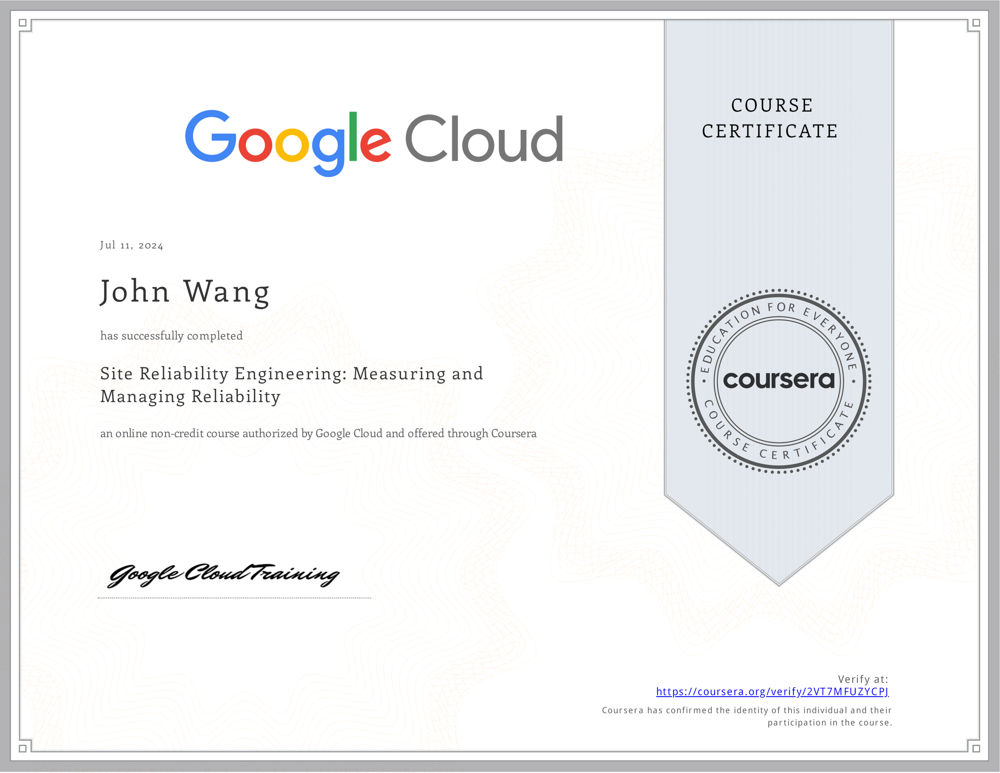
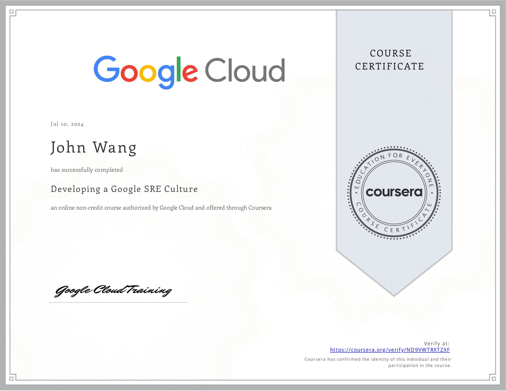
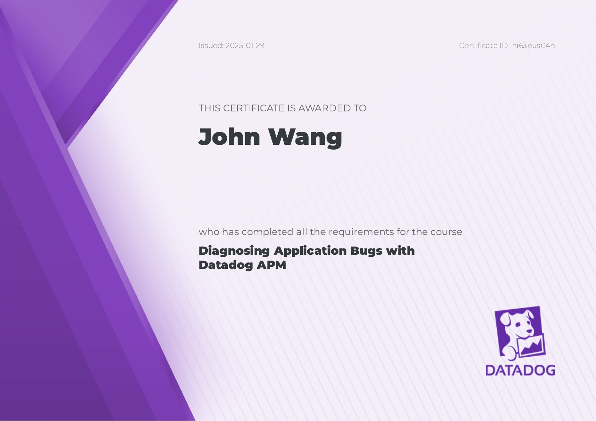
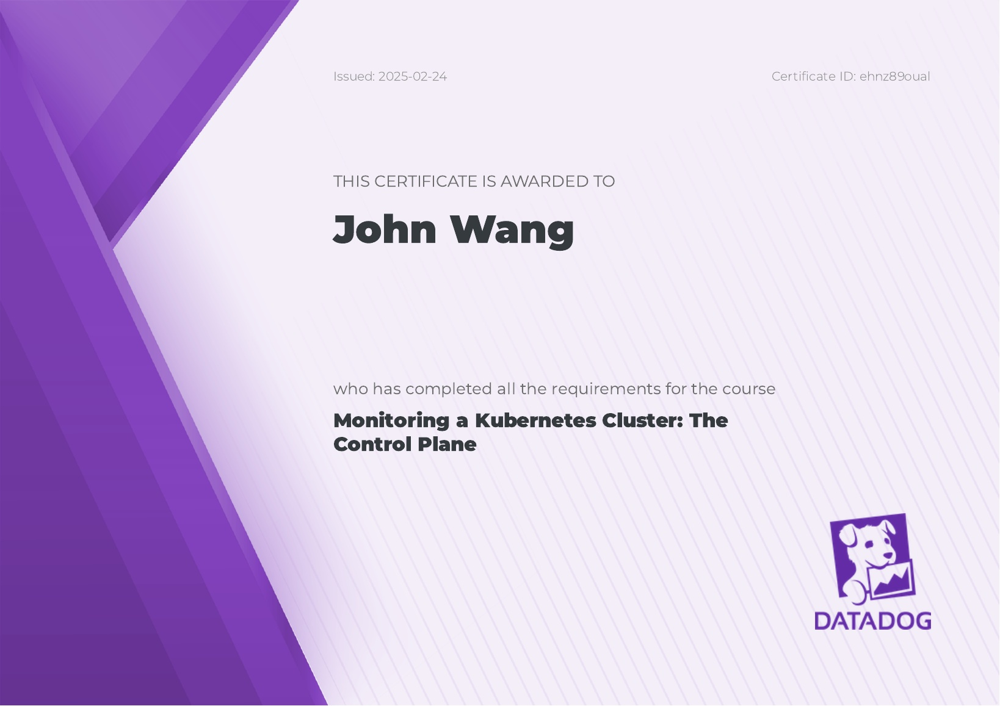

John's Observability and Reliability Certificates
- Fundamentals
- Site Reliability Engineering (SRE)
- Site Reliability Engineering: Measuring and Managing Reliability from Google Cloud
- Developing a Google SRE Culture from Google Cloud by Kiran Varma
- Incorporating Site Reliability Engineering (SRE) in Your System Design from Pluralsight by Elton Stoneman
- Microsoft Azure Solutions Architect: Design for High Availability from Pluralsight by Barry Luijbregts
- OpenTelemetry (OTel)
- Datadog
- Introduction to Observability from Datadog
- Introduction to Service Level Objectives from Datadog
- Detect, Prioritize, and Remediate Cloud Security Risks with Datadog CSM from Datadog
- Getting Started with APM Metrics & Traces from Datadog
- Diagnosing Application Bugs with Datadog APM from Datadog
- Monitoring a Kubernetes Cluster: Install the Agent from Datadog
- Monitoring a Kubernetes Cluster: The Control Plane from Datadog
- Monitoring a Kubernetes Cluster: Troubleshooting Workloads from Datadog
Fundamentals (1)
Building an Observable Infrastructure and Code from Pluralsight by Aravind Putrevu

Site Reliability Engineering (SRE) (4)
Site Reliability Engineering: Measuring and Managing Reliability from Google Cloud

Developing a Google SRE Culture from Google Cloud by Kiran Varma

Incorporating Site Reliability Engineering (SRE) in Your System Design from Pluralsight by Elton Stoneman

Microsoft Azure Solutions Architect: Design for High Availability from Pluralsight by Barry Luijbregts

OpenTelemetry (OTel) (1)
Introduction to OpenTelemetry from Datadog
Datadog (8)
Introduction to Observability from Datadog

Introduction to Service Level Objectives from Datadog

Detect, Prioritize, and Remediate Cloud Security Risks with Datadog CSM from Datadog

Getting Started with APM Metrics & Traces from Datadog
Diagnosing Application Bugs with Datadog APM from Datadog

Monitoring a Kubernetes Cluster: Install the Agent from Datadog

Monitoring a Kubernetes Cluster: The Control Plane from Datadog
